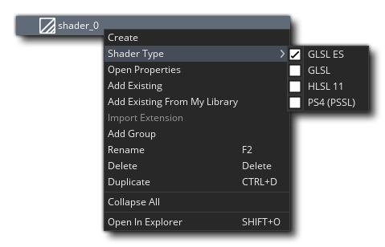
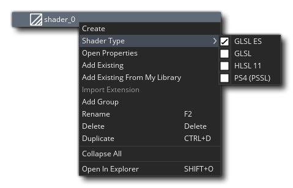

着色器是一个非常强大的工具，可用于操纵渲染到屏幕上的图像，其速度之快和范围之大都令人难以置信，例如，它可以给精灵添加细微的色调，直到产生全屏失真的效果。但是什么是着色器？
着色器是一个非常强大的工具，可用于操纵渲染到屏幕上的图像，其速度之快和范围之大都令人难以置信，例如，它可以给精灵添加细微的色调，直到产生全屏失真的效果。但是什么是着色器？
着色器基本上是一个由两部分组成的程序，它直接在显卡本身上运行，因为 GPU 可以完成所有工作并释放游戏代码的 CPU 周期，因此非常快。完整的着色器由顶点着色器程序和片段着色器程序（也称为像素着色器）组成。这两个微程序一起工作，来操纵显卡在屏幕上显示图形。 这允许你实时操作实际渲染到显示缓冲区中的位置、颜色和 alpha 值。
顶点着色器 是渲染管道中的可编程着色器阶段，用于处理各个顶点（用于渲染任何图像的三角形的点），以及渲染几何体时（如精灵或曲面） - GameMaker Studio 2 创建一个顶点流，称为 顶点缓冲区，定义了这些三角形的几何形状。 例如，一个精灵会将两个三角形(多边形)的几何图形呈现在一起，形成一个“四边形”。来自顶点缓冲区的顶点流作为输入提供给顶点着色器，顶点着色器可以以可编程方式处理顶点数据。GPU 使用顶点着色器输出来组合三角形，然后将三角形正确地剪切并剔除到视口，然后发送到 GPU 的光栅化块，生成 新 的输出流，由称为片段的东西构成。 这些是微小的数据结构，每个数据结构都与屏幕上显示的单个三角形像素相关。
片段着色器 是渲染管道中处理 “片段” 的可编程着色器阶段，- “片段” 是用于给定多边形纹理的插值像素 - 并且它们负责输出每个渲染三角形像素的最终像素颜色。基本上它的工作方式如下：片段着色器接收所有那些由顶点着色器沿管道传递的片段（正在渲染的三角形的各个像素）作为其输入。 然后，你可以处理这些片段以更改将绘制到屏幕的最终目标像素的颜色和 alpha 值。
有关着色器如何工作以及它们在图形管道中的位置的完整概述超出了本手册的范围，但是 YoYo Games 已经制作了许多技术博客文章，这些文章提供了一个很好的基础：
GameMaker Studio 2 支持以下着色器语言：
| 着色器语言 | 目标平台 |
|---|---|
| GLSL ES | 全平台 |
| GLSL | Mac 和 Ubuntu (Linux) |
| HLSL11 | Windows, UWP, XboxOne |
| PSSL | Playstation 4 |
要创建着色器资源，只需右键单击 “资源” 树中的 “着色器” 文件夹，然后选择 创建。创建基础着色器后，可以在新资源上使用鼠标右键  菜单选择着色器类型，然后再继续编辑代码：
“资源” 树中的 “着色器” 文件夹，然后选择 创建。创建基础着色器后，可以在新资源上使用鼠标右键  菜单选择着色器类型，然后再继续编辑代码：
在创建新着色器时，代码编辑器本身会分成两个程序，每个着色器都可以从顶部的选项卡中获得。这是因为 如果没有这两个部分，则无法创建着色器。 即使你只想使用片段着色器，你也必须先创建一个 “通过” 顶点着色器，这就是为什么默认情况下创建的已为你编码的新着色器都会有一个通过顶点和片段着色器（在页面顶部的屏幕截图中，你可以看到我们已经使用 代码编辑器窗格视图 来显示并排两个着色器...在同时处理两个着色器程序时很有用）。
值得注意的是，你可以在所有目标平台上使用 GLSL ES 着色器，但对于 HTML5 目标平台，你 HTML5 游戏选项 中 必须启用 WebGL，否则它将无法工作。
有关着色器功能以及如何在 GameMaker Studio 2 中使用它们的更多详细信息，请参阅以下页面：
- 着色器函数 - 着色器的 GML 参考部分
- 着色器常量 - GameMaker Studio 2 中内置的常量，可在编写着色器时使用
- GLSL ES 规范 - GameMaker Studio 2 使用的 Open GL 着色器语言规范的 pdf